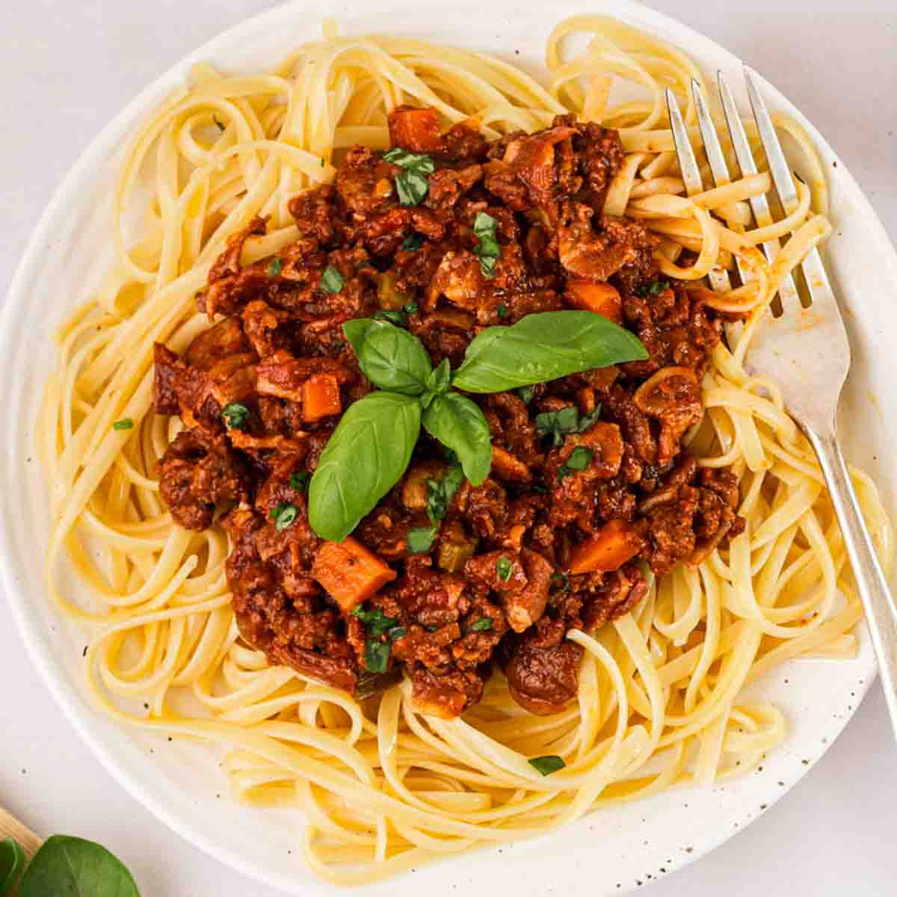

Bolognese

Description
It's tomatoes, it's spaghetti, it takes four bastard hours to simmer, but at least you can freeze it for a nice meal another day too?
Ingredients
- 2 Tins of Peeled Plum Tomatoes
- Half a Pack of Mushrooms
- 1-2 Onion(s)
- 500g Mince
- Green Pepper
- Thyme
- Parsley
Method
- Fry mince in pan
- Throw in onions and Mushrooms
- Throw in the rest
- Tomatoes and herbs, cartouche, lid on, simmer on low for as long as you dare
Index